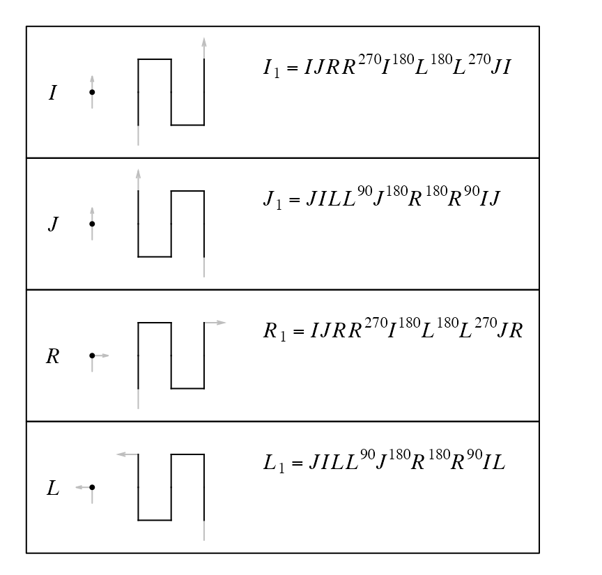
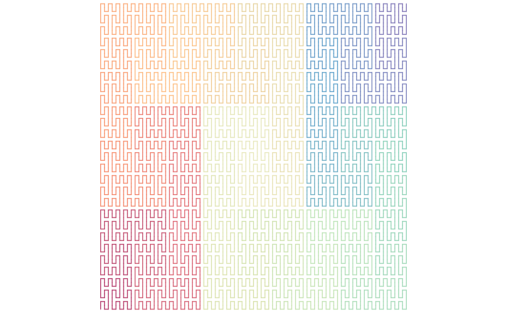

Generalized Peano Curve
Zuguang Gu (z.gu@dkfz.de)
2024-07-29
Source:vignettes/peano_curve.Rmd
peano_curve.RmdBase patterns
There are the following expansion rules from level-0 to level-1 for the Peanno curve. Note all these level-1 units are vertical.

I and J are the same on level-0 (i.e. going forward), but they correspond to different patterns on level-1 as we only allow a pattern to rotate, but not to flip. Also separating I from J makes only one extension from level-0 to level-1 for each base pattern.
Unlike the Hilbert curve where there are more than one transverse paths. For the Peano curve, we can simpliy specify the number of the level.
p = sfc_peano("I", level = 3)
# the same as sfc_peano("I", code = "111"), but 1 is only allowed
plot(p)By applying the expansion rules, a Peano curve is fixed on a level \(k\). However, note each level-1 or level-\(k\) (\(k \ge 1\)) pattern can be flipped against its diagonal line without affecting the structure of other parts of the curve. Then we can have a flipped version of the original expansion rules where all level-1 units are horizontal:
draw_rules_peano(flip = TRUE)
Then, for example, when expanding \(I^{(0)}\) to \(I^{(1)} = RI^{(270)}L^{(270)}LJ^{(90)}R^{(90)}RI^{(270)}L^{(270)}\), each base pattern can take its flipped version independently, also \(I^{(1)}\) as a whole can be independently flipped.
Number of different forms
From level 0 to level 1, there are two different forms: the normal one and the flipped one:
\[ n_1 = 2 \]
From level 1 to level 2, all the nine points can be expanded by choosing the normal base pattern or the flipped one. The global unit on level 2 can also be in the normal form or the flipped form.
\[ n_2 = n_1^9 \cdot 2 \]
Then we can have sequentially:
\[ \begin{align*} n_3 &= n_2^9 \cdot 2 \\ & ... \\ n_k &= n_{k-1}^9 \cdot 2 \\ \end{align*} \]
And \(n_k\) can be calculated as:
\[ n_k = 2^{9^{k-1} + ... + 9 + 1} = 2^{\frac{9^k - 1}{8}} \]
Or we can calculate it in another way by counting the total number of square units on various levels on the Peano curve. For a curve with level \(k\), the number of square unit with level \(i\) is \(9^{k-i}\). Then we sum these numbers from level \(k\) to level 1:
\[ \sum_{i=1}^{k} 9^{k-i} = \frac{9^k - 1}{8} \]
Each unit on various levels all can be flipped independently. The final number of different forms of the Peano curve on level \(k\) is:
\[ n_k = 2^{\frac{9^k - 1}{8}} \]
With combining the four base patterns and four rotations, the final number of different forms of the Peano curve is
\[ 4 \cdot 4 \cdot 2^{\frac{9^k - 1}{8}} \]
Unit flipping
We can set a global flipping rule on every level expansion.
sfc_peano("I", level = 3,
flip = c(FALSE, FALSE, FALSE, TRUE, FALSE, FALSE, TRUE, FALSE, FALSE)) |> plot()
Every unit can be manually flipped by specifying its “hierarchy index”. Splitting the curve into 9 blocks recursively, for an index of “93”, it means the 9th block on the first level of the hierarchy, and within this block, its 3rd child-block. Notice the orientation of the top-left corner of the top-right block in the right plot.
draw_multiple_curves(
p,
sfc_flip_unit(p, "93"),
nrow = 1
)The index can also be specified as a vector, then the flipped in applied sequentially (the three units on the left of the curve).
draw_multiple_curves(
p,
sfc_flip_unit(p, c("1", "2", "3")),
nrow = 1
)
The standard Peano curve
In previous section, we demonstrate setting flip argument to a logical vector which is actually less useful. In this section, we will demonstrate how to set flip as a self-defined function to support more flexible adjustment of the Peano curves.
There are several ways to generate the standard Peano curve where all level-1 (9x9) units are oriented vertically.
- The design of the “primary expansion rules” is to let all level-1 units be vertical, then to generate a standard Peano curve, if the base letter in the curve has a rotation of 90 or 270 degrees, we replace it with the flipped version. The self-defined function
flip()accepts one argument which is the current curve in the expansion. Then adjusting to the standard Peano curve can be easily done by:

- We can mandatorily change all level-1 units to vertical.
sfc_apply()applies a self-defined functionfunon every units on a certain level (in the following example, it is applied to levelsfc_level(p)-1). The self-defined function accepts one argumentxwhich is the current unit.
p = sfc_peano("I", level = 4)
sfc_apply(p, sfc_level(p)-1, function(u) {
if(level1_unit_orientation(u) == "horizontal") {
sfc_flip_unit(u)
} else {
u
}
}) |> plot(lwd = 1)
- Directly use the helper function
change_level1_unit_orientation().
change_level1_unit_orientation(p, to = "vertical") |> plot(lwd = 1)
The first method generates the exact Peano curve where on every level the vertical structure is kept, but for the next two methods, the vertical pattern is only applied on level-1 while higher level can have any type of structures.
p = sfc_peano("I", rot = 90, level = 4)
change_level1_unit_orientation(p, to = "vertical") |> plot(lwd = 1)
And for the horizontal case:
p = sfc_peano("I", rot = 90, level = 4)
change_level1_unit_orientation(p, to = "horizontal") |> plot(lwd = 1)
The first method generates the exact Peano curve where on every level the vertical structure is kept, but for the next two methods, the vertical pattern is only applied on level-1 while higher level can have any type of structures. Unit flipping is a powerful way for adjusting curves. We will get to deeper explorations in the vignette “Unit flipping”.
Seed as a sequence
Beside using a single base letter as the seed, a sequence can be used as the seed as well.
seed = sfc_sequence("IJILJILJILJI", rot = -90, universe = sfc_universe(SFC_RULES_PEANO))
plot(seed, grid = TRUE)